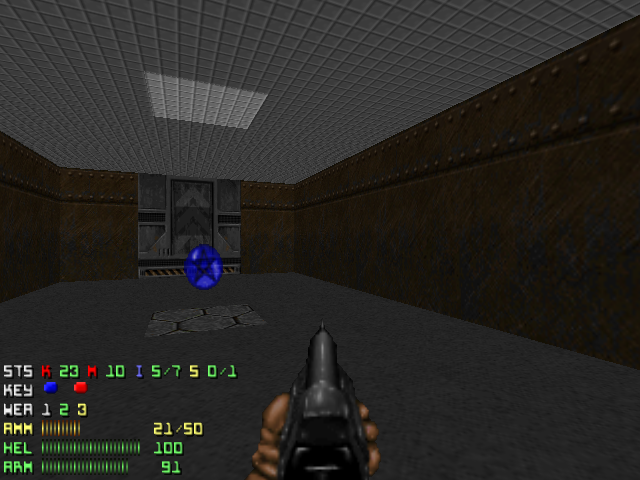
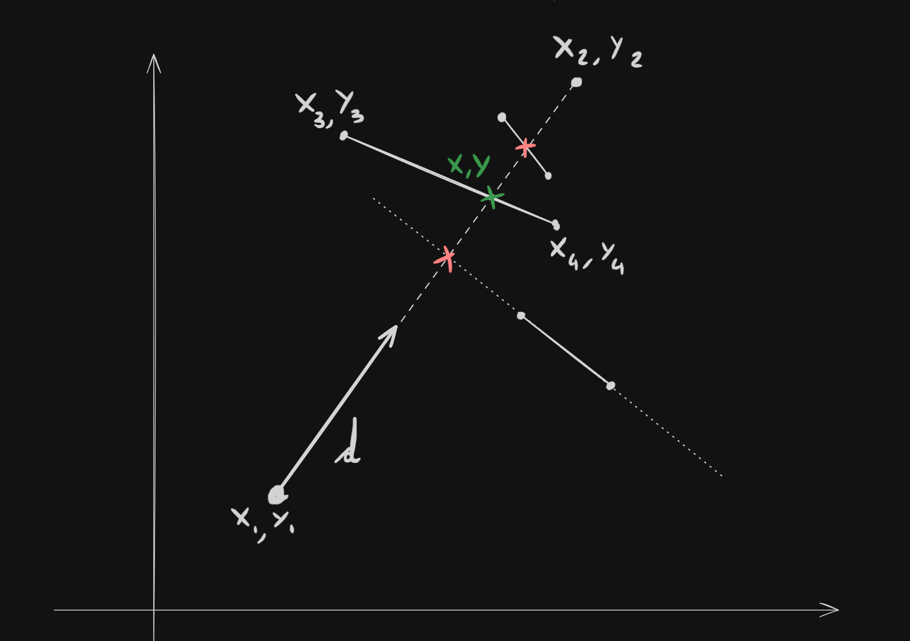
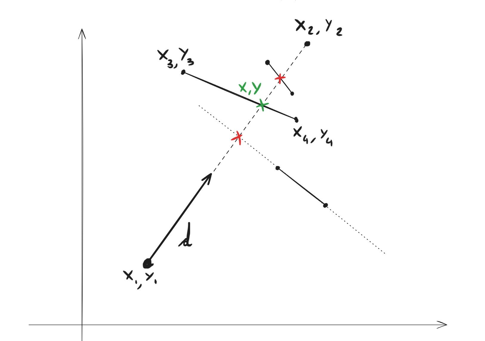

MAZE WALKER
L'OBBIETTIVO THE OBJECTIVE
Abbiamo fatto un gioco molto semplice in un articolo precedente utilizzando una visuale 2D.
Ora proveremo a fare un altro gioco ancora più semplice, ma visualizzandolo in prima persona.
We've made a very simple game in a previous project using 2D graphics.
Now we're gonna try to make an even simpler game, but visualizing it in first person.
Compromessi Compromises

Ci sono vari approcci per renderizzare una scena tridimensionale in prima persona. Alcuni di questi li vedremo più avanti, ma per ora atteniamoci alle cose semplici.
Siccome stiamo lavorando in un labirinto bidimensionale e non ci importa dell'asse Z, possiamo tentare di ricreare un look simile a quello del primo Doom, usando il Ray Casting.
Inoltre possiamo fare delle altre assunzioni per semplificarci il lavoro:
There are several approaches to rendering a first-person, three-dimensional scene. We'll look at some of these later, but for now, let's keep things simple.
Since we're working in a two-dimensional maze and don't care about the Z-axis, we can try to recreate a look similar to the original Doom using Ray Casting.
We can also make a few other assumptions to simplify our work:
- Usare colori solidi al posto di texture We'll use solid colors instead of textures
- Implementare ogni muro come un segmento di linea, definito dalle coordinate delle sue estremità We'll implement each wall as a line segment, defined be the coordinates of its ends
COME FUNZIONA HOW DOES IT WORK
Per prima cosa ci serve un agente che possa proiettare dei raggi. Questi raggi rappresentano la vista del nostro agente, quindi devono interrompersi quando incontrano un oggetto che ostacolerebbe la sua visuale.
Una tecnica piuttosto cruda per implementare questi raggi sarebbe quella di rappresentarli come una semiretta sul piano, che ha origine nlle coordinate dell'agente e si estende in una certa direzione.
Dopo di che un po' di algebra lineare ci permette di trovare l'intersezione tra la semiretta e un muro, ovvero il punto dove si interrompe il raggio.
The first thing we need is an agent capable of casting rays. These rays reppresent the view of the agent, so they need to stop whenever they reach a target that would break its line of sight
A crude technique to implement the rays is to represent them as an half-line starting from the agent and extending infinitely in a certain direction.
With a bit of linear algebra we can get the intersection between the half-line and a given wall, that being the ending point of the ray.
* direzione_raggio è un vettore unitario che indica la direzione del raggio. Viene scalato per le dimensioni della viewport per dare l'impressione che il segmento si estenda all'infinito.
* ray_heading is a unit vector with the heading of the ray. It gets scaled by the size of the viewport to give the impression that it extends infinitely.


Un problema che salta subito all'occhio è che stiamo iterando su ogni muro, per ogni raggio. Questo può impattare le nostre performance significativamente.
Ci sono alcuni stratagemmi che possono aiutarci a diminuire considerevolmente il numero di confronti. Alcuni di essi derivano dal fatto che il labirinto si trova su una griglia.
A glaring problem with this code is the it checks the intersection with each wall, for each ray, each frame. This can significantly impact performance.
There are some tricks that can help reduce the number of checks. Some of these hinge on the assumption the maze is constructed on a grid.
- Controllare un solo quadrante della mappa, determinato dalla direzione del raggio
- Unire tra loro più muri contigui che giacciono sulla stessa retta
- Iterare sui muri in un ordine preciso, a anelli crescenti intorno all'agente. Così da trovare i muri più vicini per primi
- Only check one quadrant of the map, decided by the heading of the ray
- Join together walls that lay on the same grid line
- Iterate over the walls in a spiraling order emitting from the agent. This will lead to the closer walls being found first
Dai Raggi Alla Vista From Rays to View
Ora che abbiamo un agente che casta questi raggi, come arriviamo a disegnare la veduta del giocatore?
È abbastanza semplice. Iniziamo proiettando una quantità n di raggi all'interno del campo visivo del giocatore. Ogni uno di questi raggi corrisponderà a una banda verticale dello schermo.
In ogni banda verticale disegnamo un rettangolo di altezza inversamente proporzionale alle lunghezza del raggio corrispondente. Questo darà l'impressione che gli oggetti più distanti siano più piccoli di quelli vicini.
Now that we have an agent casting some rays, how do we get to draw the player's view?
We start by projecting n rays in the field of view of the player. Each one of these rays will be mapped to a vertical band of the screen.
In each vertical band we will draw a rectangle, with his height scaled inversely to the corresponding ray's length. This will give the impression that further objects get smaller and vice versa.